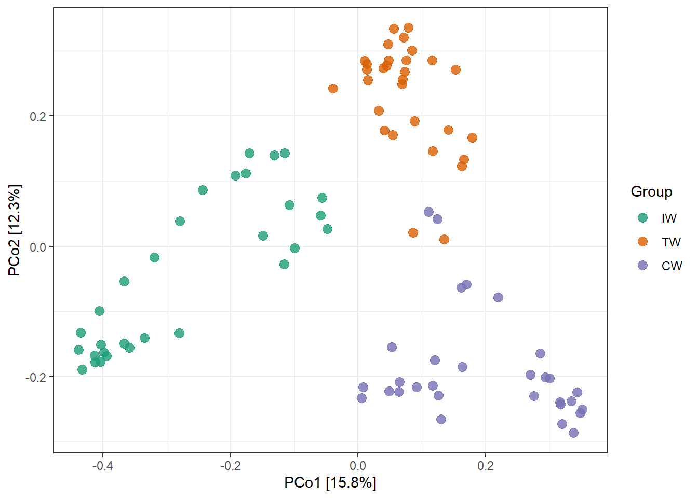
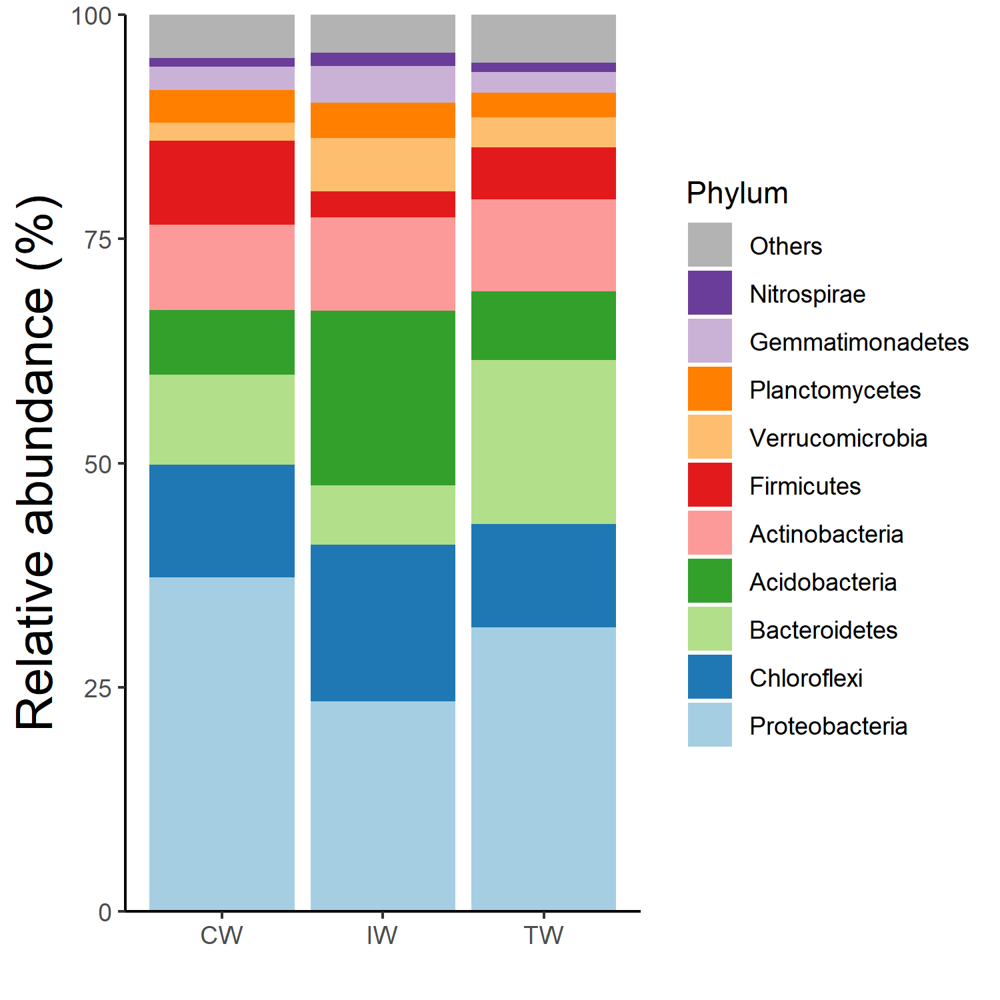

Chapter 10 Notes
We show some other important points here.
10.1 clone function
R6 class has a special copy mechanism which is different from S3 and S4.
If you want to copy an object completely, you should use the function clone instead of direct assignment.
# use clone to copy completely
t1 <- clone(dataset)
t2 <- clone(t1)
t2$sample_table <- NULL
identical(t2, t1)## [1] FALSE# this operation is usually unuseful, because changing t2 will also affect t1
t2 <- t1
t2$sample_table <- NULL
identical(t2, t1)## [1] TRUE10.2 save function
As an R6 object is an encapsulated environment, there is also another useful advantage, i.e. the data repeatability.
By applying R6 classes, the analyzed data in ‘R Environment’ can have minimum numbers of intermediate files.
It is also very convenient to save the analyzed data (i.e. object) to local computer with save function for back-up and communication with others.
This is also the recommended way to send data for testing in ‘Github Issues’.
# save 'dataset' to local computer
save(dataset, file = "dataset.RData")
# dataset.RData can be compressed into zip format for the upload in 'Github Issues'
# load the data by others in their R project
load("dataset.RData")The saved object is only related with the package version when you save it and has no matter with the updated package when you load it again. So it is repeatable.
10.3 Github Issues
Please write the question/bug/suggestion in ‘Github Issues’ (https://github.com/ChiLiubio/microeco/issues). Several points are recommended.
Before creating a ‘New issue’, please first skim through the ‘Issues’ including ‘Open’ and ‘Closed’. Then go ahead if no similar issue is found or the similar issue is not solved.
Please remember to provide your package version when writing a ‘New issue’.
For the specific issue related with data, please provide the data and scripts for the reproduction. If the data has not been published, please provide a toy example or a subset data as far as possible.
To provide the data, please use save function as previous part shows (https://chiliubio.github.io/microeco_tutorial/notes.html#save-function), and paste the compressed zip format data.
When pasting the script directly, please use ``` at the beginning and end of scripts to mark the code block for the readability as # can cause format chaos without code tag.
10.4 change object
All the classes are set public, meaning that you can change, add or remove the objects stored in them as you want.
# add a matrix you think useful
dataset$my_matrix <- matrix(1, nrow = 4, ncol = 4)
# change the information
dataset$sample_table %<>% .[, -2]10.5 group order
If you want to reorder the groups, assign the factors may be the most simplest way.
data(dataset)
t1 <- trans_beta$new(dataset = dataset, measure = "bray")
t1$cal_ordination(ordination = "PCoA")## The ordination result is stored in object$res_ordination ...t1$plot_ordination(plot_color = "Group")
Then we assign factors to the ‘Group’ in sample_table of dataset. We can find the changed group order in the legend and colors in the plot.
dataset$sample_table$Group %<>% factor(., levels = c("IW", "TW", "CW"))
str(dataset$sample_table)## 'data.frame': 90 obs. of 4 variables:
## $ SampleID: chr "S1" "S2" "S3" "S4" ...
## $ Group : Factor w/ 3 levels "IW","TW","CW": 1 1 1 1 1 1 1 1 1 1 ...
## $ Type : chr "NE" "NE" "NE" "NE" ...
## $ Saline : chr "Non-saline soil" "Non-saline soil" "Non-saline soil" "Non-saline soil" ...t1 <- trans_beta$new(dataset = dataset, measure = "bray")
t1$cal_ordination(ordination = "PCoA")## The ordination result is stored in object$res_ordination ...t1$plot_ordination(plot_color = "Group")
10.6 add layers to plot
Most of the plots are generated by applying the ggplot2 package. The important parameters in the plotting functions are configured according to our experience. If the inner parameters can not enough, the user can add the layers to the plot like the following operation or make the plot using the data (generally data.frame class) stored in the object.
# The groupmean parameter can be used to obtain the group-mean barplot.
t1 <- trans_abund$new(dataset = dataset, taxrank = "Phylum", ntaxa = 10, groupmean = "Group")
g1 <- t1$plot_bar(others_color = "grey70", legend_text_italic = FALSE)
g1 + theme_classic() + theme(axis.title.y = element_text(size = 18))
10.7 colors for many groups
In general, the color palette in the ploting function is enough for the settings of groups or samples, such as RColorBrewer::brewer.pal(12, “Paired”). If the user has too many groups (e.g. 20), the color_palette_20 can be used. It has 20 colors with paired combinations. If this is still not enough, the randomcoloR package can be used for generating more colors.
color_palette_20## [1] "#1f77b4" "#aec7e8" "#ff7f0e" "#ffbb78" "#2ca02c" "#98df8a" "#d62728"
## [8] "#ff9896" "#9467bd" "#c5b0d5" "#8c564b" "#c49c94" "#e377c2" "#f7b6d2"
## [15] "#7f7f7f" "#c7c7c7" "#bcbd22" "#dbdb8d" "#17becf" "#9edae5"barplot(1:20, col = color_palette_20)